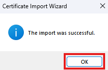

üì¶ Preuzmite fajlove
Ovde možete preuzeti potrebne fajlove za Vuk's Marshal Mod Manager.
sadržaj prerekvizita izdvojiti u %appdata%, a sadržaj ManifestX ZIP Paketa (MSIX i sertifikat) izdvojiti i pratiti uputstvo .
%appdata%/
└── .manifestsv/
├── stable.xvuk
└── Assets/
└── img.png
Upozorenje
Ovaj tutorijal je namenjen isključivo za instalaciju sertifikata vuk-developer.cer, koji se koristi za
Vuk's Marshal Mod Manager MSIX.
Instalacija nepoznatih sertifikata preuzetih sa interneta može biti rizična i ugroziti bezbednost vašeg sistema.
vuk-developer se odriče svake odgovornosti za bilo kakve posledice koje mogu nastati neovlašćenom upotrebom ovog uputstva.
1. Pronađite Vaš Sertifikat i MSIX Fajl
- Pronađite svoj
.cerfajl i odgovarajući.msixfajl u folderu za distribuciju.
2. Otvorite Sertifikat i Kliknite na "Install Certificate..."
- Dvaput kliknite na
.cerfajl. - Kliknite na dugme Install Certificate....
3. Izaberite Lokaciju za Instalaciju
- Izaberite Local Machine opciju.
- Kliknite na Next.
4. Odaberite Ručni Izbor Certificate Store-a
- Selektujte Place all certificates in the following store.
- Kliknite na Browse....
5. Izaberite "Trusted Root Certification Authorities"
- Izaberite Trusted Root Certification Authorities.
- Kliknite na OK.
6. Potvrdite Izbor
- Uverite se da piše Trusted Root Certification Authorities.
- Kliknite na Next.
7. Završite Uvoz Sertifikata

- Kliknite na Finish da završite instalaciju.
8. Uvoz je Uspešno Završen
- Poruka The import was successful će se pojaviti.
- Kliknite na OK.
9. Pokrenite MSIX paket za instalaciju
- Otvorite MSIX.
- Kliknite na Install.
- Program je sadainstaliran.